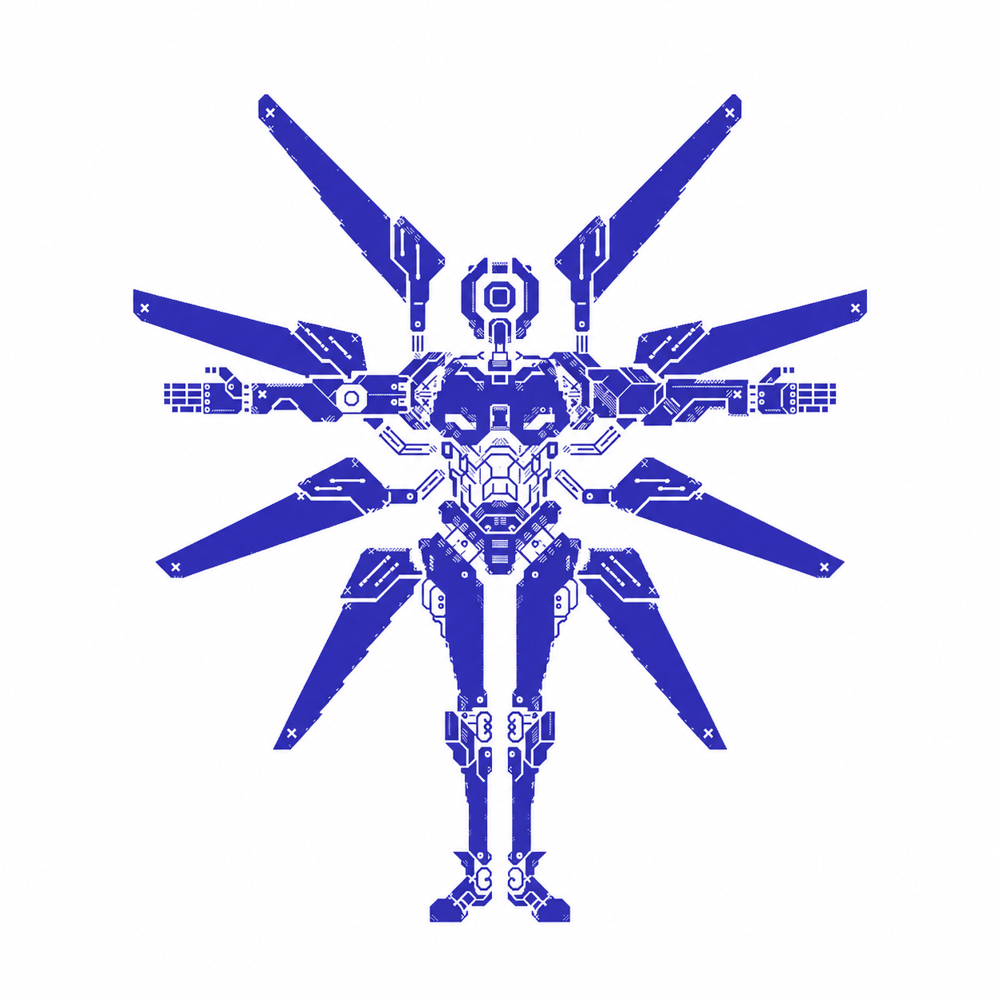

Meu primeiro post
Por: Gregory
Boas-vindas ao meu novo blog! Aqui vou compartilhar dicas de jogos e curiosidades de tecnologia.
Vou compartilhar conhecimentos sobre tecnologia e video-games

Por: Gregory
Boas-vindas ao meu novo blog! Aqui vou compartilhar dicas de jogos e curiosidades de tecnologia.
Por: Gregory
Como o processador de 8 bits da época não conseguia processar um número maior que 255 para o contador de frutas, o sistema sofria um estouro de inteiro. Isso corrompia a memória de vídeo, transformando metade da tela em um amontoado ilegível de códigos e impedindo o jogador de coletar as pastilhas necessárias para avançar. Esse erro ficou conhecido mundialmente como a Kill Screen do Pac-Man.
Fonte: The Cutting Room Floor
Por: Gregory
so